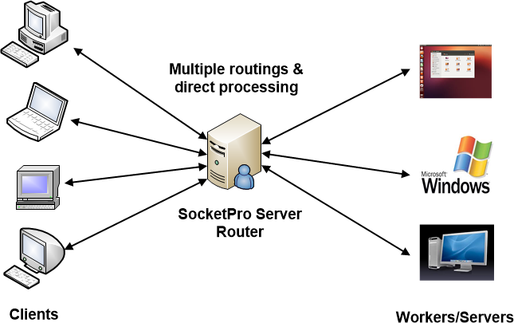
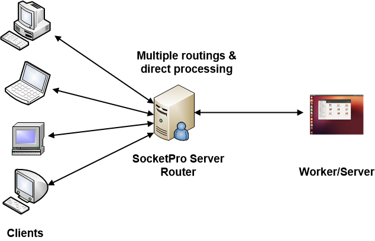
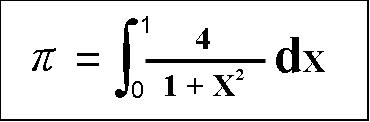
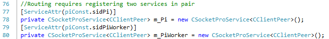
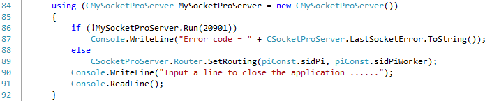
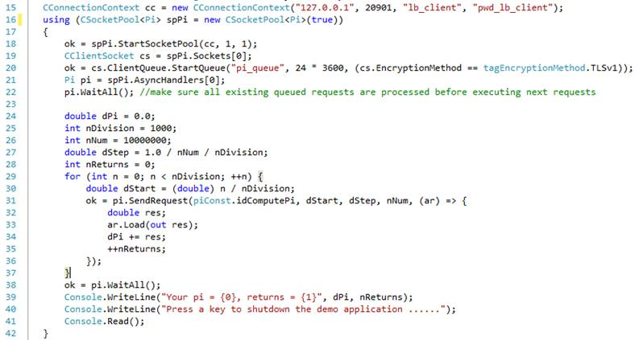
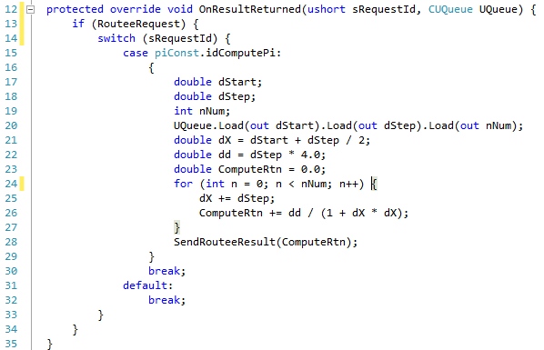

Tutoral 8 – Treat SocketPro Server as a Router for Load Balancing
Contents:
Introduction
Routing architectures and benefits
· Many-to-many
· Many-to-one
Server side code
· Prepare two services in pair
· Register a routing by the method SetRouting
· Process some requests within router or SocketPro server instead of workers
Client side code
· Set a persistent message queue for auto failure recovery
· Divide integration into parts and sum collected results
Worker side code
1. Introduction
SocketPro provides two features for distributing workloads across multiple computing resources. The first feature is called client socket pool, which enables a client to access multiple servers for fast and scalable processing requests asynchronously and in parallel as shown in tutorial 4 -- Build responsive and scalable web applications in a few hours.
The second feature is called SocketPro server routing or load balancing. Each SocketPro server is able to support multiple routings by different configurations. Furthermore, you can also directly process a portion of requests at server instead of workers.
The tutorial projects are located at the directory ..\tutorials\(csharp|vbnet|cplusplus|java\src|ce|python)\loading_balance.
2. Scenarios
Many-to-many: In general, SocketPro server supports multiple many-clients-to-many-workers routings as shown in the following Figure 1.

Figure 1: SocketPro server many-clients-to-many-workers routing architecture
Note that a SocketPro server is able to support multiple routings. Moreover, SocketPro routing is bi-directional so that not only can a worker become a client but a client can also become a worker. As shown in Figure 1 above, you will then be able to directly process some requests through the routing server instead of workers.
If we use SocketPro persistent message queues at client side, SocketPro guarantees auto failure recovery for any problems caused by networks, router and workers since persistent message queue is able to act as a request log to re-send requests if necessary.
SocketPro routing supports load-balancing affinity. You can group any number of requests from a client and send or route them onto one worker for processing if persistent message queue is employed at client side. If you do not use persistent message queue, the maximum number of requests grouped is limited to two gigabytes.
Finally, SocketPro ensures request at-least-once delivery if persistent message queue is used at client side. Without persistent message queue at client side, SocketPro does not guarantee any auto failure recovery or at-least-once request delivery.
Many-to-one: If there is only one worker, Figure 1 above will become the following Figure 2. In this particular case, SocketPro guarantees both auto failure recovery and exactly-once delivery as long as clients use persistent message queue. All of the queued requests with SocketPro are ensured to be exactly-once delivery except in the case where there are two or more workers involved with a routing as shown in Figure 1 above.

Figure 2: SocketPro server many-clients-to-one-worker routing architecture
3. Numerical integration for π
Consider the problem of computing the value of π using the numerical integration below.

Figure 3: Compute π value by use of numerical integration
We can use trapezoidal integration to solve the integral. The basic idea is to fill the area under a curve with a series of tiny rectangles. As the width of rectangles approaches 0, the sum of the areas of these rectangles approaches the real value of π. To accurately achieve the value, we must divide the integral area with rectangles as numerous and small as possible. Therefore, we are going to divide the whole integration into a set of sections and send them onto different working machines (clients/workers) with a SocketPro server in between as a router. These workers actually finish CPU-extensive numerical integration in parallel. The sending machine (client) will collect the integral values of these sections from these workers and then add them to get the π value.
Prepare two services in pair: Two services must be registered in pair to use routing at SocketPro server side. One service represents sending client requests while the other is for processing requests as worker. You could use the code snippet in Figure 4 below to prepare two services for routing.

Figure 4: Prepare two services for using SocketPro routing/load balancing feature at server side
Register a routing by the method SetRouting: Once two services are prepared, we can use the method SetRouting to register them for routing as shown in line 89 of the following Figure 5.

Figure 5: Register one routing with the method SetRouting
Note that you can register multiple routings at server side.
Process some requests within router or SocketPro server instead of workers: Under many situations, you may like the option to directly process a portion of requests at server side instead of processing by workers. To do so, first you have to derive a new class from CClientPeer and implement it with the portion of requests as usual. Afterwards, you call the method AddAlphaRequest to tell SocketPro server that these requests are scheduled to be processed within this SocketPro server instead of workers.
5. Client side code
The major client code snippet is shown in Figure 6. The code in line 20 starts a persistent message queue so that SocketPro ensures request at-least-once delivery and auto failure recovery. Codes in line 24 through 37 actually send 1000 requests to workers for computing 1000 integrals. The Lambda expression in line 31 through 36 collects each of 1000 integral values. The code in line 38 is a waiting barrier until all expected integral values are finished from the workers.
Note that you can test SocketPro auto failure recovery by shutting down one of the workers. The final π value is the same; the count of return integral values will be 1000, no matter how you shut down one of workers since persistent message queue is employed at client side.

Figure 6: Divide the whole numerical integration into parts before delivering workloads across multiple workers for processing
6. Worker side code
The worker side code is extremely simple as shown in the following Figure 7. First, we use the property RouteeRequest in line 13. The actual integral is finished in lines 17 through 27. At the end, we send the final integral value back to client using the method SendRouteeResult as shown in line 28.

Figure 7: Compute an integral value at worker side